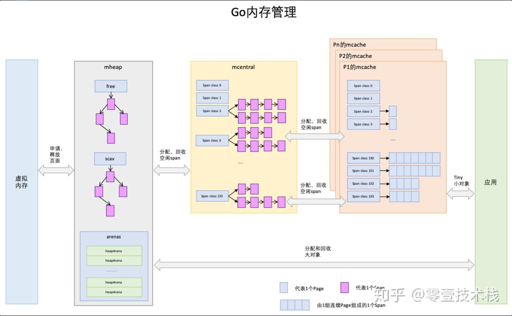
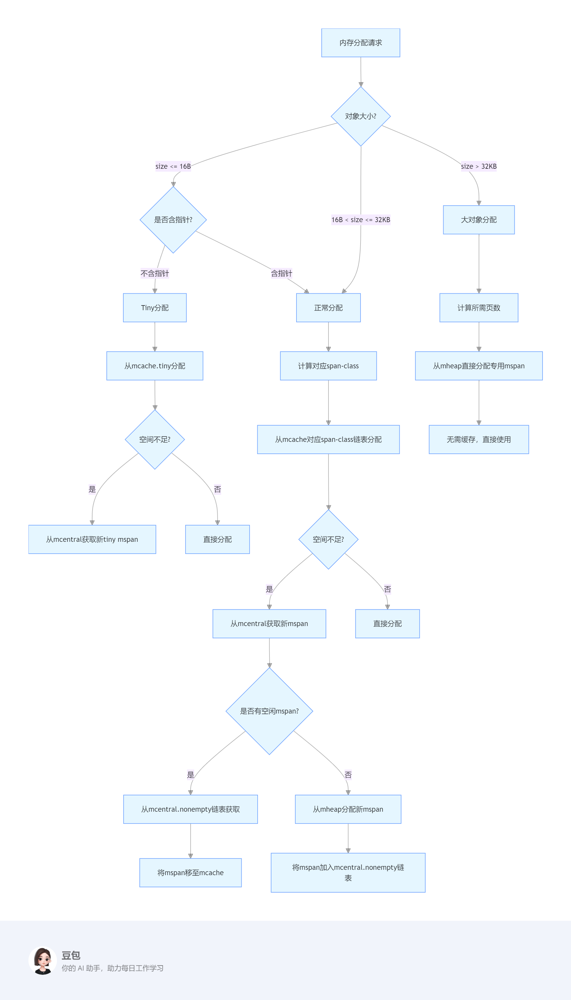
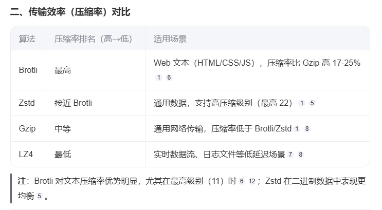
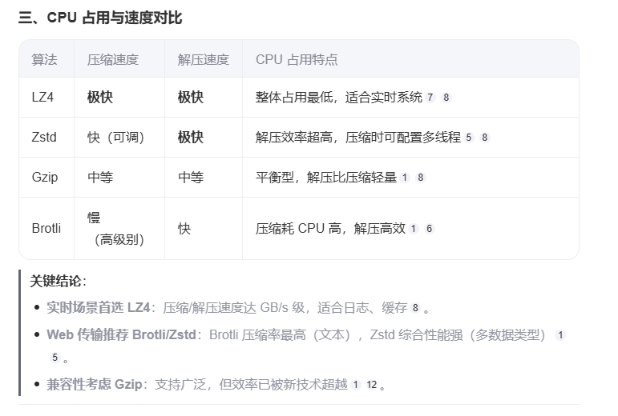
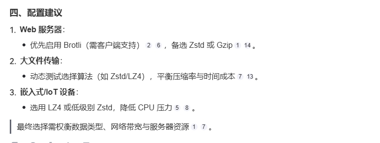
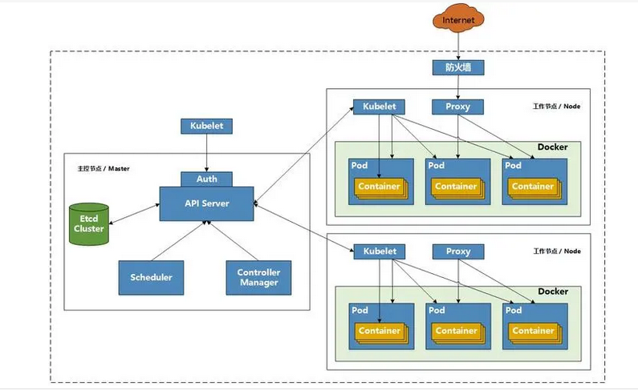
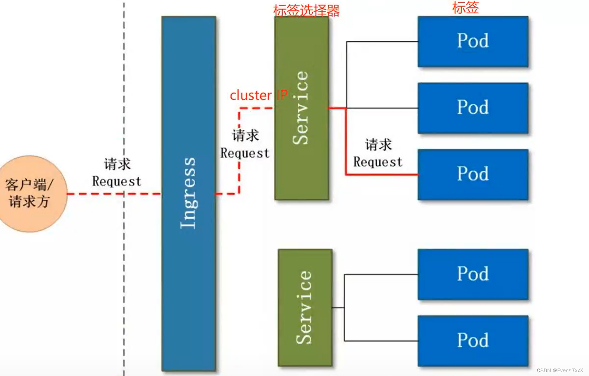

数据类型
1. 值类型：int, float, string, bool, array, stuct
2. 引用类型：slice, map, chan, 空接口, 指针
数据类型区别
1. 值类型：变量存值，内存在栈分配
2. 指针类型：变量存地址，地址指向值，内存在堆分配
函数传参都是值拷贝
切片包含对底层数组的引用，在不扩容的情况会影响原始切片， map传递的是指向map内部数据结构的指针的拷贝，会影响原始map
new和make的区别
1. new
分配值类型的内存，返回指向零值的指针
2. make
分配引用类型的内存，初始化对应类型后返回类型
切片，chan，map需不需要用make以及区别
1. 切片可以不需要make
使用make可以指定长度与容量进行分配，其中所有元素为零值，只指定长度容量将默认为长度
不使用make切片的长度与容量将由元素或数组范围自动确定
2. chan需要make
3. map可以不需要make
使用make后映射被正确初始化，可以立即存储键值对，没有显式make则go会自动完成初始化
不使用make该map为零值，需要显式调用make初始化才能使用
切片底层与扩容
1. 切片底层为指向底层数组的指针，长度，容量
2. 扩容机制：
2.1 当切片容量不足时，根据版本不同go会自动扩容当前容量2倍或1.25倍
2.2 根据计算出的容量，在堆上分配一个新的数组
2.3 将原切片中的元素复制到新分配的数组中
2.4 更新切片的指针指向新的数据，更新长度与容量
map底层与扩容
1. map底层依赖于哈希表，底层结构体为hmap，维护bucket桶数组， bucket中元素结构为bmap， bmap为bucketCnt-uint8键值对，bucket满了会放到下一个溢出桶中， 通过overflow连接，oldbuckets指向原来的桶
channel底层
底层数据结构为hchan结构体
1. qcount：当前channel中元素个数
2. dataqsiz：环形缓冲区的容量
3. buf：环形缓冲区的指针（有指定缓冲）
4. recvx：下一个接收操作的位置
5. sendx：下一个发送操作的位置
6. recvq：接收等待队列，包含等待从channel接收数据的goroutine
7. sendq：发送等待队列，包含等待向channel发送数据的goroutine
8. lock：互斥锁，用于保护channel数据结构的访问，防止多个goroutine同时修改channel的内部状态
channel缓冲与无缓冲区别
1. 当创建一个无缓冲channel时，它不会分配用于存储元素的缓冲区。发送和接收操作将直接交换数据，并且必须同时准备好，否则操作将阻塞
2. 有缓冲channel会分配一个环形缓冲区来存储元素。发送操作会首先尝试将数据写入缓冲区；如果缓冲区已满，则发送操作将阻塞。 同样，接收操作会首先尝试从缓冲区读取数据；如果缓冲区为空，则接收操作将阻塞
channel关闭后可以读写吗
1. 对于无缓冲channe，关闭后可以读出零值，写则会panic
2. 对于缓冲channe，关闭后可以读完缓冲的值，然后读零值，写则会panic
channel调度
Go的运行时系统包含一个调度器，它负责协调goroutine的执行和channel的发送/接收操作。 调度器会根据channel的状态和等待队列中的goroutine来做出决策，以确保并发操作的高效和公平性，当某个Goroutine阻塞时，调度器会将其他Goroutine唤醒，或者主动挂起让出资源如sleep 。
协程控制
1. 通过channel实现协程间通信 ,select控制读写，可以通过time.After或context实现超时
2. WaitGroup控制并发数量，通过Done()减少计数，Wait()等待所有协程完成
并发模型
1. CSP（Communicating Sequential Processes）理论
2. 强调通过通信来共享内存，而非通过共享内存来实现通信
资源泄漏
1. Goroutine 创建后没有正确结束，或者 Channel 没有正确关闭，就可能导致资源泄漏
2. 为了避免资源泄漏，需要确保所有 Goroutine 在完成任务后能够正常退出，可以使用context.Context来管理 Goroutine 的生命周期
上下文context原理
1. channel与sync.Mutext实现
3. cancelCtx，把自己加到父级ctx的children里，cancel方法递归调用children的cancel方法，释放资源
WaitGroup
Add，Done，Wait方法通过原子操作和锁实现计数
sync有什么锁以及区别
1. 互斥锁sync.Mutex, 只有一个goroutine可以访问
2. 读写锁sync.RWMutex, 读锁可以多个，写锁只能一个
3. 条件变量sync.Cond, 用于等待条件满足
4. 信号量sync.Semaphore, 用于控制并发数量
5. 计数器sync.WaitGroup, 用于等待协程完成
5. 计数器sync.Once, 用于保证初始化只执行一次
GMP调度
1. G: goroutine，表示一个 Goroutine，对于Go调度器来说，每个G都是一个待执行的任务,协程，轻量级线程，go关键字创建
2. M: machine，表示的是操作系统的线程，由操作系统进行调度和管理
3. P: processor，表示Go调度器中的处理器，它是系统线程和Goroutine 的中间层
4. 调度：当一个G准备执行时，会被放入P的运行队列，P会从队列中取出一个G，执行，当G执行完毕，会释放P， 调度器会再次尝试获取一个可执行的G，如果没有可执行的G，则阻塞在M上，等待G的唤醒
5. 并行：当一个G被阻塞时，另一个G可以被调度到相同的P上执行，提高执行效率
6. 并发：当一个G被阻塞时，另一个G可以被调度到不同的P上执行，提高执行效率
7. 主动权：当一个G被阻塞时，M会主动让出P，让其他的G执行，提高执行效率
8. 协作式调度：当一个G被阻塞时，会主动寻找其他的G，协作执行，提高执行效率
9. 非抢占式调度：当一个G被阻塞时，不会主动让出P，而是等待调度器唤醒，提高执行效率
10. 协程切换：当一个G执行完毕，会切换到另一个G，提高执行效率

三色标记法
1. 白色：未分配的内存，可以分配
2. 灰色：已分配的内存，不能分配
3. 黑色：已分配的内存，不能分配
4. 初始状态：所有内存都为白色
5. 标记过程：从根对象开始，将其直接可达对象标记为灰色，将其间接可达对象标记为灰色，直到没有灰色对象为止
6. 回收过程：将所有未分配的白色内存释放，并将灰色内存标记为黑色
7. 优点：不需要额外的空间，不需要额外的标记，不需要额外的遍历，只需要记录每个对象的颜色即可
8. 缺点：不能处理循环引用，不能处理对象间的复杂关系
内存管理
注：free（空闲内存管理相关），scav（垃圾回收相关 ），arenas 区域是堆内存的具体分区，用于存放实际数据
1. page: 管理内存的存储单元也是页（Page）, 每个页的大小是 8KB
2. mspan: 内存管理的基本单位,一个 mspan 包含一个或者多个 page
3. mcache: 缓存，用于临时存储分配的内存，减少锁竞争
4. mcentral: 所有线程共享的缓存，需要加锁访问
5. mheap：堆内存的抽象，把从OS申请出的内存页组织成Span，并保存起来。当mcentral的Span不够用时会向mheap申请内存，而mheap的Span不够用时会向OS申请内存
内存逃逸
Go 语言中的内存逃逸是编译器优化技术，核心目标是自动决定变量应该分配在栈上还是堆上。其触发条件是变量的生命周期超出当前函数的作用域。 这种机制允许 Go 开发者无需手动管理内存（如 C++ 中的 new/delete），同时保证程序的内存安全。
核心策略：
1. 外部引用原则：如果变量在函数外部存在引用（如返回指针、赋值给全局变量、闭包、切片扩容等），必须分配在堆上
2. 栈优先原则：如果变量仅在函数内部使用（无外部引用），优先分配在栈上
3. 栈容量限制：即使无外部引用，如果变量占用内存过大（超过栈空间限制），仍会分配到堆上。具体阈值与 Go 版本和平台有关（通常为几 KB 到几十 KB）
4. 动态类型约束：当变量类型为interface{}时（动态类型），由于编译期无法确定实际类型大小，必须逃逸到堆
5. 引用类型发生二次间接引用极大可能逃逸：引用类型：func()函数类型；interface{}接口类型；slice；map；channel；*（指针类型）
二次间接引用场景举例：func([]string) ; map[string]interface{} ; slice[*int] ; chan []stirng …
检测逃逸命令
go build -gcflags="-m -m" main.go
优化建议：尽量避免返回局部变量的指针，预估切片容量，减少动态扩容
内存泄露
语言依赖自动垃圾回收机制来管理内存，理论上无需开发者手动释放内存。 然而，若代码中存在对象的无效引用、循环引用、资源未关闭等情况，也会导致内存无法被 GC 回收，从而引发内存泄漏。例如在 Go 语言中，即使有 GC，错误的代码逻辑仍会导致泄漏。
常见场景
1. 对象长期引用但不使用：程序中存在对象被长期持有引用，但后续不再使用该对象，导致 GC 无法回收其占用的内存。例如，将对象放入全局变量或静态集合中，却不再对其进行任何操作。
var globalList []*MyObject
func createObject() {
obj := &MyObject{}
globalList = append(globalList, obj)
// 后续不再使用obj，但globalList持续引用，导致obj无法被回收
}
2. 循环引用:多个对象之间形成环形引用关系，导致每个对象都被其他对象引用，即使这些对象实际已不再被程序使用，GC 也无法识别并回收它们。虽然 Go 语言的 GC 采用三色标记法，一定程度上能处理循环引用，但复杂的数据结构仍可能出现问题。
type Node struct {
data int
next *Node
}
func createCycle() {
a := &Node{}
b := &Node{}
a.next = b
b.next = a
// a和b形成循环引用，若后续无其他引用，仍可能导致内存泄漏
}
3. 资源未关闭：程序中存在打开的文件、网络连接、数据库连接等资源，但没有正确关闭，导致 GC 无法回收其占用的内存。例如，在函数退出前，忘记关闭文件句柄或数据库连接，导致资源泄漏。
4. goroutine 永久性阻塞
5. 定时器未清理
func leakTimer() {
ticker := time.NewTicker(time.Second)
go func() {
for {
<-ticker.C
// 业务逻辑，但未停止ticker，若该协程持续运行，会导致泄漏
}
}()
}
解决方案：
1. 打开资源后立即使用 defer 关闭
2. 使用 context.Context 控制 goroutine 生命周期
3. 使用 pprof 定期监控内存使用情况，对比不同时间点的内存快照（web,top,list）
InnoDB与MyISAM的区别
MyISAM
1. 不支持事务
2. 表锁，支持全文索引，不支持外键
3. 索引文件和数据文件分离，非聚集索引
4. 使用一个变量保存表的行数，count(*)快，查询速度快
InnoDB
1. 支持事务
2. 行锁，支持外键
3. 数据文件和索引文件放在一起，聚集索引
索引
1. 主键索引
2. 唯一索引
3. 普通索引
4. 全文索引
5. 组合索引
6. 空间索引
索引失效
1. or条件包含没有索引列
2. 对索引列进行计算或使用函数，如YEAR(date_column)
3. 组合索引不遵行最左前缀原则
4. LIKE以通配符%开头
5. 全表扫描速度比索引速度快：在数据量极少或索引字段数据重复率很高的情况下，MySQL可能认为全表扫描比使用索引更快，因此不会使用索引
6. 使用不等于(<>或!=)操作符：使用不等于操作符时，根据结果集的大小，索引可能会失效
7. IS NOT NULL条件，索引可能不会使用
8. NOT IN和NOT EXISTS子句，索引可能不会使用
9. 数据更新频繁
10. ORDER BY包含没有索引列，索引可能不会使用
explain解析
1. type（连接类型: 理想的连接类型是 ref（非唯一性索引扫描，返回匹配某个单独值的所有行）、eq_ref、const（对于常量值）或 range（索引范围扫描），这些类型通常表示查询能够有效地利用索引。 相反，ALL（全表扫描）和 index（索引全扫描）可能表明查询性能较差，因为它们需要扫描大量的数据
2. key（实际使用的索引）:如果这一列是 NULL，则表示没有使用索引。如果查询可以受益于索引但 MySQL 没有使用，可能是因为查询条件没有有效地利用索引，或者 MySQL 认为使用索引并不比全表扫描更快
3. rows（预计扫描的行数）:这个值越小越好，因为它表明查询效率更高。如果这个值非常大，尤其是接近或超过表中的总行数，那么可能需要优化查询或索引
4. filtered（过滤百分比）
5. possible_keys（可能的索引）
6. Extra（额外信息）:是否使用了索引来排序（Using index for order by）、 是否使用了索引覆盖扫描（Using index，但这里的 Using index 与 type 列中的 index 不同，前者表示索引覆盖了查询中的所有列，后者表示进行了索引全扫描）、 是否进行了文件排序（Using filesort，这通常意味着需要优化索引或查询以避免在内存中或磁盘上进行排序操作）等
7. select_type（查询类型）
8. partitions（匹配的分区）
sql优化
1. 利用索引，避免全表扫描、回表查询
2. 尽量避免使用SELECT *，而应选择需要的字段进行查询，以减少数据传输量并提高查询效率
3. join: 小表放在前面可以提高查询效率，使用INNER JOIN替代OUTER JOIN，如果业务逻辑允许
4. 缓存：使用缓存可以减少数据库的压力，提高查询效率，缓存失效时，可以重新查询数据库
5. 分库分表：将数据分布到多个数据库或表中，可以有效地解决数据量过大的问题，提高查询效率
6. 读写分离：将数据库读写分离，可以有效地提高数据库的并发处理能力，减少数据库的压力
日志
1. 查询日志：记录数据库执行的SQL语句，可以分析SQL执行效率，优化SQL语句
2. 慢日志：记录数据库慢查询，分析慢查询原因，优化慢查询
3. 错误日志：记录数据库错误信息，分析错误原因，定位错误
4. 二进制日志（binlog）：记录数据库的DDL和DML操作，可以用于数据恢复
5. 中继日志（relaylog）：从主服务器上的二进制日志中取数据，然后写入中继日志里面，在从服务器上，执行中继日志的sql信息， 这样从服务器就会得到和主服务器一样的内容，与此同时每次执行之后从服务器的二进制日志也会记录， 这个从服务器的二进制日志内容应该是和主服务器是一致的，所以我们通常采取的操作就是将从服务器的二进制日志关闭掉
6. 事务日志：记录数据库事务操作，可以用于数据恢复
7. DDL日志：记录DDL语句（如CREATE TABLE、ALTER TABLE等）执行的元数据操作，用于支持DDL操作的原子性和一致性
事务
1. 原子性（Atomicity）：事务是一个不可分割的工作单位，事务中包括的诸操作要么都做，要么都不做
2. 一致性（Consistency）：事务必须是数据库从一个一致性状态变到另一个一致性状态
3. 隔离性（Isolation）：一个事务的执行不能被其他事务干扰
4. 持久性（Durability）：一个事务一旦提交，它对数据库中数据的改变就应该是永久性的
幻读，脏读， 不可重复读什么情况发生
1. 幻读（Phantom Read）：发生在当一个事务读取某些数据后，另一个事务插入或删除了一些数据，导致前一个事务再次读取相同的数据时， 看到的数据集与第一次读取时不同。幻读侧重于某个范围内的数据行数量变化，即数据集的不一致导致的问题。
具体来说，幻读的出现是由于事务隔离级别造成的。在读已提交隔离级别下，事务在读取数据时会锁定相应的行，但锁定的时间很短。 这可能导致在事务读取数据和事务完成之间，其他事务有机会插入新的数据。由于这些新插入的数据在第一个事务的读取操作之后才出现， 因此对于第一个事务而言，这些新数据就像是“幻象”一样，造成了幻读
2. 脏读（Dirty Read）：一个事务读到另一个事务未提交的变更，侧重于更新
3. 不可重复读（Repeatable Read）：一个事务在同一个事务中多次读取同一数据时，其结果是一致的，即使其他事务在该事务中插入了新的数据
隔离机制
1. 读未提交（Read Uncommitted）：一个事务可以读到另一个事务未提交的变更，可能出现脏读、幻读、不可重复读
2. 读已提交（Read Committed）：一个事务只能读到另一个事务提交的变更， 可能出现幻读、不可重复读
3. 可重复读（Repeatable Read）：一个事务在同一个事务中多次读取同一数据时，其结果是一致的，即使其他事务在该事务中插入了新的数据， 可能出现幻读
4. 串行化（Serializable）：对同一行记录的读写操作是串行化的，即使多个事务并发执行，其结果也是一致的，事务之间互不干扰
锁的类型
一：按模式分类
1. 乐观锁：假设不会发生冲突，只在提交操作时检查是否有冲突，适用于读多写少的场景, 乐观锁不是数据库层面的锁，而是通过应用逻辑（如版本号、时间戳等）来实现的
2. 悲观锁：假设冲突总是会发生，因此每次访问数据都会加锁，适用于写多读少的场景,悲观锁主要通过数据库提供的锁机制来实现，如SELECT ... FOR UPDATE
二：按粒度分类
1. 全局锁：对整个数据库实例加锁，限制除了超级用户外的所有查询和修改操作，一般用于备份、恢复等操作
2. 表级锁：对整张表加锁，锁定期间其他事务不能对该表进行任何操作，适用于MyISAM
3. 行级锁：对一行记录加锁，锁定期间其他事务不能对该行记录进行任何操作，适用于InnoDB
三：按属性分类
1. 共享锁（S）：多个事务可以同时对数据进行读操作，但只能获得数据行的共享访问权，其他事务只能等待
2. 排他锁（X）：对数据进行排他性修改的锁，一次只能有一个事务持有该锁，其他事务必须等待
四：其他特定锁
1. 意向锁（Intention Lock）：事务在等待锁的过程中，释放了其他事务持有的锁，以便获得所需的锁
2. 间隙锁（Gap Lock）：对索引的范围进行锁定，防止其他事务插入数据导致索引失效
3. 临键锁（Next-Key Lock）：对索引的记录加锁，防止其他事务插入数据导致索引失效
数据库操作语言：DDL、DML、DQL、DCL、TCL使用及区别
1. DDL（Data Definition Language）：用于定义数据库对象，如数据库、表、视图、索引等
2. DML（Data Manipulation Language）：用于操作数据库对象，如插入、删除、更新等
3. DQL（Data Query Language）：用于查询数据库对象，如SELECT、UPDATE、DELETE等
4. DCL（Data Control Language）：用于控制数据库对象，如事务、权限等
5. TCL（Transaction Control Language）：用于控制事务，如COMMIT、ROLLBACK等
6. 区别：DDL用于定义数据库对象，如创建、修改、删除表、索引等；DML用于操作数据库对象，如插入、删除、更新数据；DQL用于查询数据库对象，如SELECT、UPDATE、DELETE等；DCL用于控制数据库对象，如事务、权限等；TCL用于控制事务，如COMMIT、ROLLBACK等。
数据仓库分层
1. 数据引入层（ODS, Operational Data Store）：这一层主要存放原始数据，保持与源系统的数据结构一致，主要用于数据的快速存储和初步处理
2. 数据明细层（DWD, Data Warehouse Detail）：对ODS层的数据进行清洗、转换和规范化处理，去除空值、异常值等，为后续的数据分析提供高质量的数据
3. 数据服务层（DWS, Data Warehouse Service）：基于DWD层的数据，进行轻度的汇总和聚合，提供更高层次的数据服务，满足不同业务需求
4. 应用层（ADS, Application Data Store）：为各种应用和报表提供最终的数据支持，确保数据的准确性和一致性
主从复制原理
1. MySQL主从复制涉及到三个线程，一个运行在主节点（log dump thread），其余两个(I/O thread, SQL thread)运行在从节点，如下图所示:

2. 同步模式：异步模式，半同步模式（只能保证主库的bin-log至少传输到了一个从节点上），全同步模式
3. 数据一致性：主库配置每次事务对应的binlog刷到磁盘中，从库配置自动修复机制
执行顺序
1. from子句：从哪个表中读取数据
2. join操作：连接多个表
3. on子句：连接条件
4. where子句：对数据进行过滤
5. group by子句：对数据进行分组
6. having子句：对分组数据进行过滤
7. select子句：选择要显示的列
8. order by子句：对结果集进行排序
9. limit子句：限制结果集的数量
10. union操作：合并多个结果集
缓存类型与使用场景
1. 字符串（String）：缓存用户信息、配置信息等
2. 哈希（Hash）：缓存对象，如用户信息、商品信息等
3. 列表（List）：缓存排行榜、文章列表等
4. 集合（Set）：缓存共同好友、共同关注等,集合成员是唯一
5. 有序集合（Sorted Set）：缓存排行榜、商品推荐等,不允许重复的成员
6. 二进制位图（Bitmaps）：缓存用户签到状态、商品访问记录，布隆过滤器等
缓存更新策略
策略一
1.LRU 淘汰最久没有被访问过的
2.LFU 淘汰访问次数最少的
3.FIFO 先进先出
策略一只能选一种，属于当缓存不够用时采用的更新算法
策略二
超时剔除，给缓存数据手动设置一个过期时间
策略三
如果数据源的数据有更新，则主动更新缓存
缓存击穿，缓存穿透，缓存雪崩解决方法
1. 缓存击穿（Cache Hitting）：一个热点key在某个时间点过期时，恰好有大量并发请求访问这个key，导致这些请求直接打到数据库，给数据库带来巨大压力，可以使用互斥锁
2. 缓存穿透（Cache Penetration）：查询一个不存在的数据，由于缓存和数据库都没有这个数据，导致每次请求都会直接打到数据库，给数据库带来压力，可以使用布隆过滤器，缓存空值来解决
3. 缓存雪崩（Cache Avalanche）：在同一时段内，大量的缓存key同时失效或Redis服务宕机，导致大量请求直接打到数据库，给数据库带来巨大压力，可以使用给不同得key的ttl添加随机值、限流、降级、缓存预热来解决
布隆过滤器
用于判断一个元素是否在一个集合中，核心为二进制向量（位数组）和一系列随机映射函数（哈希函数）
工作原理
1. 初始化: 创建一个足够长的二进制向量，并将所有位初始化为0， 选择多个哈系函数用于映射元素到位数组
2. 添加元素：用多个哈系函数对元素进行哈系计算，把得到的多个哈希值对应位设置为1
3. 查询元素：用多个哈系函数对元素进行哈系计算，如果所有哈希值对应的位都为1，则认为元素存在；否则，元素不存在
实现延时队列
使用有序集合
1. 时间戳作为 Score：将消息作为 member 添加到 sorted set 中，使用 UNIX 时间戳（比如当前时间加上延迟时间）作为 score
2. 轮询或定时任务：使用一个后台任务来定期检查 sorted set 中 score 最小的元素（即最快到期的元素）
3. 处理消息：如果元素的 score 小于或等于当前时间戳，说明该消息已经到期，可以将其从 sorted set 中移除并处理
4. 重新安排或删除：根据处理结果，可能需要重新安排消息（重新添加到 sorted set 中）或删除它。
keys与scan区别
1. keys：一次性返回所有key，不支持分页,可能会阻塞Redis服务器
2. scan：支持分页，每次返回一部分key,非阻塞
主从复制原理
1. 建立连接过程：这个是slave跟master建立连接的过程
2. 数据同步的过程：是maser同步数据给slave的过程
3. 命令传播过程：是反复同步数据的过程
负载均衡策略
1. 权重：根据服务器的权重，按照权重的大小分配请求，权重越高，分配到的请求越多
2. 一致性哈希：根据服务器的IP地址，分配请求，使得请求分布到各个服务器上，使得服务器负载更加均衡
3. 轮询：将请求轮流分配到各个服务器上，使得服务器负载更加均衡
4. 最少连接：根据服务器的当前连接数，将请求分配到当前连接数最少的服务器上，使得服务器负载更加均衡
5. 响应时间：根据服务器的响应时间，将请求分配到响应时间最快的服务器上，使得服务器负载更加均衡
6. 最快出口策略：根据服务器的出口带宽，将请求分配到带宽最高的服务器上，使得服务器负载更加均衡
7. 加权最快出口策略：根据服务器的出口带宽和权重，将请求分配到带宽最高的服务器上，使得服务器负载更加均衡
8. 最小连接数策略：根据服务器的当前连接数，将请求分配到连接数最少的服务器上，使得服务器负载更加均衡
9. 加权最小连接数策略：根据服务器的当前连接数和权重，将请求分配到连接数最少的服务器上，使得服务器负载更加均衡
MongoDB是什么
MongoDB是一个基于文档的NoSQL数据库，既非关系型数据库（代表redis），它使用BSON（一种类似JSON的二进制格式）来存储数据。 与关系型数据库相比，MongoDB没有固定的数据模式，支持非结构化数据的存储，且水平扩展性强。MongoDB更适合于需要快速迭代开发、数据模型经常变动的应用场景
索引
1. 单字段索引：索引一个字段，索引键值和排序规则都相同
2. 复合索引：索引多个字段，索引键值和排序规则都不同
3. 唯一索引：索引字段的值必须唯一，不能重复
4. 文本索引：用于支持全文搜索功能
5. 地理位置索引：用于支持地理位置查询
6. 哈希索引：用于支持基于哈希的查询
复制集
MongoDB的复制集是一组维护相同数据集的mongod服务实例。复制集提供了数据冗余和高可用性，当主节点发生故障时， 可以自动切换到其他可用的节点上。此外，复制集还可以提高读取性能，因为客户端可以从多个节点上并行读取数据
分片
MongoDB的分片是将数据集分布在多个MongoDB实例上的过程。分片可以提高系统的可伸缩性和性能，因为数据可以分布在多个服务器上，每个服务器只处理部分数据。 MongoDB使用分片键来确定如何将文档分配给特定的分片。当执行查询时，MongoDB会根据分片键将查询路由到相应的分片上
事务
MongoDB从4.0版本开始支持多文档事务。事务是一组必须全部成功或全部失败的操作。MongoDB使用两阶段提交协议来处理事务，确保数据的完整性和一致性。 在MongoDB中，可以使用session对象来管理事务的边界，并使用startTransaction、commitTransaction和abortTransaction方法来控制事务的开始、提交和中止
$lookup是什么
$lookup是MongoDB聚合管道中的一个阶段，它用于执行左外连接操作。$lookup可以从另一个集合中获取与输入文档相关联的文档，并将它们合并到输出文档中。 使用$lookup时，需要指定要连接的集合、连接条件和输出字段等参数。例如，可以使用$lookup将订单集合中的订单与库存集合中的商品进行关联查询
如何优化MongoDB的查询性能
优化MongoDB的查询性能可以从多个方面入手。首先，确保为常用的查询字段创建适当的索引以提高查询速度。其次，避免使用全表扫描和不必要的投影操作来减少数据传输量。 此外，可以使用查询分析器（如explain()方法）来分析查询计划并找出性能瓶颈。最后，定期清理和压缩数据库以释放存储空间并提高读写性能
$set和$setOnInsert操作符有什么区别
$set操作符用于更新文档中的字段。如果字段不存在，$set将创建该字段并将其值设置为指定的值。如果字段已存在，$set将更新该字段的值。 而$setOnInsert操作符仅在upsert操作为true且导致插入新文档时才有效。如果新文档被插入，$setOnInsert将设置字段的值；如果现有文档与查询条件匹配，则不会进行任何更改
文本索引
文本索引用于支持全文搜索功能。文本索引可以包含一个或多个字段，并为这些字段中的文本内容创建索引。创建文本索引后， 可以使用$text操作符在索引字段上执行全文搜索查询。此外，还可以使用$meta操作符来获取有关文本搜索结果的元数据，如搜索得分和匹配项的高亮显示
$group聚合操作符有什么作用
使用聚合管道的$group阶段来进行分组操作。$group阶段将输入文档组合到具有共同值的组中，并为每个组计算聚合值。在$group阶段中，我们需要指定一个分组标识符（通常是一个或多个字段的组合），以及要计算的聚合表达式（如计数、求和、平均值等）。 例如，我们可以使用$group阶段按类别对销售数据进行分组，并计算每个类别的总销售额
然而，如果你确实想要按照某个字段的值进行分组并获取每个组的文档列表（类似于SQL中的GROUP BY），那么你需要使用MongoDB的聚合管道并结合$group与$push操作符来实现。 首先使用$group来分组文档，并使用$push将每个组的文档添加到一个数组中。然后你可以使用$unwind来拆分数组中的文档，以便进一步处理或输出
投影是什么
指的是在查询操作中指定返回哪些字段的过程，不能与$text查询操作符一起使用
聚合（Aggregation）操作
例子：
db.orders.aggregate([
{ $group: { _id: "$category", total: { $sum: 1 } } }
])
这个例子中，假设有一个名为orders的集合，其中包含订单信息，每个文档都有一个category字段表示订单类别。通过使用$group操作符， 我们按照category字段对文档进行分组，并使用$sum操作符计算每个分组中的文档数量。结果将返回一个包含_id（即类别）和total（即该类别的文档数量）的文档列表
简介
RabbitMQ是实现了高级消息队列协议（AMQP）的开源消息代理软件（亦称面向消息的中间件）
使用协议
1. AMQP（Advanced Message Queue Protocol 高级消息队列协议）
2. AMQP 连接通常是长连接
3. 使用认证机制并且提供 TLS（SSL）保护
组件

a. 生产者（Publisher/Producer）：生产者会将消息发送给交换机。为了使交换机正确的将消息路由给队列，发布消息时需指定消息的路由键（routing key）
b.消息服务器（Broker）：接收消息，推送消息。
c.虚拟主机（Virtual Host）：类似于namespace概念，可用于实现隔离不同用户的权限。
d.交换机（Exchange）：交换机负责接收消息并按照routing key将消息路由给队列。路由交换机只做路由，不会存储数据。
e.绑定（Binding）：交换机和队列之间通过路由键（routing key）相互绑定起来，并根据路由键将消息路由到对应队列。
f.队列（Queue）。
g.连接（Connection）：消费者/生产者与broker之间的连接。
h.通道（Channel）：如果消费者每一次从代理中取消息都建立一次连接的话，在消息量大的情况下建立多个连接将会有巨大的开销。 Channel是在Connection内部建立的逻辑连接。channel之间是完全隔离的。Channel作为轻量级的Connection极大减少了操作系统建立TCP connection的开销。
i.消费者（Consumer）。
工作模式
1.simple 模式

2.工作队列 模式

工作队列模式多个消费者属于竞争的关系。一个消息只会被其中一个消费者消费。默认情况下broker会将消息平均地分发到各个消费者。
3.发布订阅模式

广播模式,会忽略掉Exchange和queue之间的binding。消息会路由到所有绑定该Exchange的所有queue。
4.路由模式

直连模式,消息的routing key和binding需要完全相等才会将消息路由到队列
5.主题模式

模糊匹配。消息的routing key满足binding的模式就可以路由到队列。 '#'可以匹配0到多个字符串，'*'号匹配一个。如上图，routing key为"lazy"、"lazy.a.b"、"a.x.rabbit"都可以路由到Ｑ2； "lazy.orange.x"可以同时路由到Q1和Q2；"b.orange"不匹配任何binding，会被丢弃
注意
生产者只需要知道该往哪个Exchange发送消息，路由工作由Exchange负责。 由于Exchange不会保存数据，发布订阅\路由\主题模式必须先保证有queue被绑定到该Exchange，否则消息会被丢掉 simple\工作队列模式 生产者不用绑定Exchange，只需要指定消息需要推送到哪个队列，会有个默认Exchange转发消息
TTL队列
1.通过队列属性设置：队列中所有消息都有相同的过期时间
2.对消息进行单独设置：每条消息的TTL可以不同
3.如果同时使用了这两种方式，消息的过期时间将以较小的数值为准
死信队列 (DXL)
被队列丢掉的消息就是死信,如过期、队列满了
延时队列
ttl + dxl 实现延时队列

消息的幂等性
所谓的幂等性其实就是保证同一条消息不会重复或者重复消费了也不会对系统数据造成异常
消费者在消费完成一条消息之后会向MQ回复一个ACK（可以配置自动ACK或者手动ACK） 来告诉MQ这条消息已经消费了。 假如当消费者消费完数据后，准备回执ACK时，系统挂掉了，MQ是不知道该条消息已经被消费了。 所以重启之后MQ会再次发送该条消息，导致消息被重复消费，如果此时没有做幂等性处理，可能就会导致数据错误等问题
解决方案：
1.消费数据为了单纯的写入数据库，可以先根据主键查询数据是否已经存在，如果已经存在了就没必要插入了。 或者直接插入也没问题，因为可以利用主键的唯一性来保证数据不会重复插入，重复插入只会报错，但不会出现脏数据
2.消费数据只是为了缓存到redis当中，这种情况就是直接往redis中set value了，天然的幂等性。
3.针对复杂的业务情况，可以在生产消息的时候给每个消息加一个全局唯一ID， 消费者消费消息时根据这个ID去redis当中查询之前是否消费过。 如果没有消费过，就进行消费并将这个消息的ID写入到redis当中。如果已经消费过了，就无需再次消费了。
消息的可靠性
1. 生产者弄丢了消息: 生产者在将数据发送到MQ的时候，可能由于网络等原因造成消息投递失败
2. MQ自身弄丢了消息: 未开启RabbitMQ的持久化，数据存储于内存，服务挂掉后队列数据丢失, 开启了RabbitMQ持久化，消息写入后会持久化到磁盘，但是在落盘的时候挂掉了，不过这种概率很小
3. 消费者弄丢了消息: 消费者刚接收到消息还没处理完成，结果消费者挂掉了…
解决方案：
1.生产者弄丢了消息
1.1.生产者在发送数据之前开启RabbitMQ的事务 采用该种方法由于事务机制，会导致吞吐量下降，太消耗性能。
1.2.开启confirm模式 事务机制和 confirm机制最大的不同在于，事务机制是同步的， 你提交一个事务之后会阻塞在那儿，但是 confirm机制是异步的，你发送个消息之后就可以发送下一个消息， RabbitMQ 接收了之后会异步回调confirm接口通知你这个消息接收到了。 一般在生产者这块避免数据丢失，建议使用 confirm 机制
2. MQ自身弄丢了消息
创建queue时设置为持久化队列，这样可以保证RabbitMQ持久化queue的元数据，此时还是不会持久化queue里的数据, 发送消息时将消息的deliveryMode设置为持久化，此时queue中的消息才会持久化到磁盘。
3. 消费者弄丢了消息
关闭自动ACK，使用手动ACK
消息的顺序性
将原来的一个queue拆分成多个queue，每个queue都有一个自己的consumer。 该种方案的核心是生产者在投递消息的时候根据业务数据关键值（例如订单ID哈希值对订单队列数取模） 来将需要保证先后顺序的同一类数据（同一个订单的数据） 发送到同一个queue当中

kafka

不支持读写分离，主读主写架构，通过分区实现负载均衡
生产者发送消息有哪些模式？
1. 发后即忘：消息发送后，不管对方是否接收到消息，都认为消息发送成功。
2. 同步发送：生产者发送消息后，等待broker返回确认后才认为消息发送成功。
3. 异步发送：Kafka支持 producer.send() 传入一个回调函数，消息不管成功或者失败都会调用这个回调函数
发送消息的分区策略有哪些
1.轮询
2.key 指定分区
3.自定义策略
4.指定 Partiton 发送
Kafka 的可靠性是怎么保证的
1. 生产者丢失消息：设置acks=all：确保消息被所有副本写入后才算成功。 增加retries和delivery.timeout.ms：提升消息重试能力。 使用idempotence机制：开启生产者幂等性（enable.idempotence=true），防止重复消息导致的丢失。
1.1 acks = 1，默认为1。生产者发送消息，只要 leader 副本成功写入消息，就代表成功。 这种方案的问题在于，当返回成功后，如果 leader 副本和 follower 副本还没有来得及同步，leader 就崩溃了，那么在选举后新的 leader 就没有这条消息，也就丢失了。
1.2 acks = 0。生产者发送消息后直接算写入成功，不需要等待响应。这个方案的问题很明显，只要服务端写消息时出现任何问题，都会导致消息丢失。
1.3 acks = -1 或 acks = all。生产者发送消息后，需要等待 ISR 中的所有副本都成功写入消息后才能收到服务端的响应。毫无疑问这种方案的可靠性是最高的， 但是如果 ISR 中只有leader 副本，那么就和 acks = 1 毫无差别了。消费者要等消息成功写入到所有副本才行消费到这个消息。
2. Broker端消息丢失：提高副本数量：增加replication.factor，确保至少一个副本始终可用。 设置min.insync.replicas：限制消息提交时的最小同步副本数，例如设置为2。 使用可靠的存储设备：选择性能稳定的磁盘并做好备份。
3. 消费者端消息丢失：启用手动提交偏移量：消费者在成功处理消息后明确提交（如使用commitSync）。 定期提交偏移量：设置合理的提交间隔（auto.commit.interval.ms）。 使用幂等性消费者逻辑：确保消费的业务逻辑能够处理重复消息。/p>
Kafka 的消息消费方式有哪些
点对点、发布订阅
名词解释
1. AR: 分区中的所有副本统称为AR（Assigned Replicas）
2. ISR: 同步副本集合(In-Sync Replicas)。当主副本发生故障时，Kafka会从ISR中选举一个新的主副本来接管工作。从节点
3. OSR: 异步副本集合(Out-of-Sync Replicas)。OSR是指当前与主副本不保持同步的副本集合。这些副本可能由于网络故障或其他原因而与主副本失去同步。
4. HW: 高水位（High Watermark）。HW是指已经被所有副本复制的最高偏移量。当消费者从分区中读取消息时，它会记录当前已经读取到的偏移量，并将该偏移量作为下一次读取的起始位置。 如果消费者读取到的偏移量小于HW，那么它只能读取到已经被所有副本复制的消息；如果消费者读取到的偏移量大于HW，那么它可能会读取到未被所有副本复制的消息。
5. LEO: 日志末尾偏移量（Log End Offset）。LEO是指分区中最后一条消息的偏移量。当生产者向分区中写入消息时，它会将该消息的偏移量记录在LEO中。消费者从分区中读取消息时，它可以通过LEO来判断是否已经读取了所有的消息。
一、创建型模式
单例模式（Singleton）
定义：确保一个类只有一个实例，并提供一个全局访问点。
使用场景：适用于全局共享的资源，如数据库连接池、全局配置等。
Go实现：可以通过sync.Once或互斥锁sync.Mutex来实现线程安全的单例模式。
工厂模式（Factory Method）
定义：定义一个用于创建对象的接口，让子类决定实例化哪个类。
使用场景：当需要创建的对象类型不固定时，如日志记录器、数据库连接等。
Go实现：可以使用函数或接口加实现类的方式来实现。
抽象工厂模式（Abstract Factory）
定义：提供一个创建一系列相关或相互依赖对象的接口，而无需指定它们具体的类。
使用场景：当需要创建一组相互依赖的对象时，如构建不同风格的UI组件等。
Go实现：可以通过接口和结构体来实现。
建造者模式（Builder）
定义：将一个复杂对象的构建与它的表示分离，使得同样的构建过程可以创建不同的表示。
使用场景：适用于构建复杂对象时，需要按照特定顺序设置多个属性或步骤。
Go实现：可以通过结构体和方法链来实现。
二、结构型模式
适配器模式（Adapter）
定义：将一个类的接口转换成客户希望的另一个接口，使得原本由于接口不兼容而不能一起工作的类可以一起工作。
使用场景：当需要复用一些现存的类，而这些类的接口与新系统的接口不兼容时。
Go实现：可以通过接口嵌套或结构体组合来实现。
装饰器模式（Decorator）
定义：动态地给一个对象添加一些额外的职责，就增加功能来说，装饰器模式相比生成子类更为灵活。
使用场景：适用于在不修改原有类结构的情况下，动态地扩展类的功能。
Go实现：可以通过匿名组合和接口来实现。
代理模式（Proxy）
定义：为其他对象提供一种代理以控制对这个对象的访问。
使用场景：适用于远程代理、安全代理、智能引用等场景。
Go实现：可以通过结构体和接口来实现。
三、行为型模式
观察者模式（Observer）
定义：定义对象间的一种一对多的依赖关系，当一个对象的状态发生改变时，所有依赖于它的对象都得到通知并被自动更新
使用场景：适用于事件通知、消息订阅等场景。
Go实现：可以通过channel或接口加回调函数的方式来实现。
策略模式（Strategy）
定义：定义了一系列算法，并将每一个算法封装起来，使它们可以相互替换。
使用场景：适用于多种算法的实现，且这些算法可以互换时。
Go实现：可以通过接口和函数来实现。
模板方法模式（Template Method）
定义：定义了一个操作中的算法的骨架，而将一些步骤延迟到子类中。
使用场景：适用于算法整体步骤固定，但部分步骤可以根据需要灵活改变时。
Go实现：可以通过接口和结构体方法来实现。
压缩算法
1. gzip：支持多种压缩级别（1-9），级别越高压缩率越高但速度越慢。
2. brotil：结合上下文建模和熵编码，优化对 Web 内容的压缩效率。
3. Zstd: 支持多线程压缩和可调字典，兼顾高压缩率与实时性
4. LZ4: 仅使用哈希表匹配重复字符串，无复杂熵编码步骤
  冒泡排序
package main
import (
"fmt"
)
// bubbleSort 对整数切片进行冒泡排序
func bubbleSort(arr []int) {
n := len(arr)
for i := 0; i < n-1; i++ { // 外层循环控制所有轮次
for j := 0; j < n-i-1; j++ { // 内层循环进行每一轮的比较和可能的交换
if arr[j] > arr[j+1] { // 如果当前元素大于下一个元素，则交换它们
arr[j], arr[j+1] = arr[j+1], arr[j]
}
}
}
}
快速排序
package main
import "fmt"
func quick(nums []int) {
if len(nums) <= 1 {
return
}
start, left, right := nums[0], 0, len(nums)-1
i := 1
for left < right {
if nums[i] > start {
nums[right], nums[i] = nums[i], nums[right]
right--
} else {
nums[left], nums[i] = nums[i], nums[left]
left++
i++
}
}
quick(nums[:left])
quick(nums[right+1:])
}
二分查找法
package binarySearch
func BinarySearch(arr []int, target int) int {
if len(arr) == 0 {
return -1
}
left, right := 0, len(arr)-1
for left <= right {
mid := (left + right) / 2
if (arr[mid] == target) {
return mid
}
if arr[mid] < target {
left = mid + 1
} else {
right = mid - 1
}
}
return -1
}
雪花算法
原理
1. 全局唯一性：雪花算法通过组合时间戳、数据中心ID、工作机器ID和序列号等多个信息部分，确保生成的ID在全局范围内是唯一的。
2. 时间有序性：由于ID中包含时间戳信息，因此生成的ID在时间上是有序的，这有助于后续的数据处理和排序。
3. 高并发性：雪花算法能够在高并发场景下快速生成ID，满足大规模分布式系统的需求。
组成部分
1. 符号位：最高位是符号位，由于ID一般是正数，所以通常设置为0。
2. 时间戳：占用41位，记录ID生成的时间，通常是相对于某个自定义的“纪元”时间的偏移量。这个时间戳部分保证了ID的唯一性和时间有序性，可以支持未来数十年的唯一性。
3. 数据中心ID：占用5位，用于标识生成ID的数据中心。这允许算法在多个数据中心中部署，每个数据中心可以拥有独立的ID空间。
4. 工作机器ID：也称为机器标识，占用10位，用于标识生成ID的具体机器。这确保了在同一数据中心内，不同机器生成的ID互不冲突。
5. 序列号：占用12位，用于在同一毫秒内生成多个ID。序列号在同一毫秒内从0开始递增，当达到最大值（如4095）后会回绕到0。这允许每个节点在毫秒级别内生成多达4096个唯一的ID。
UUID
UUID是一个128位的数值，原理如下
1. 时间戳：记录UUID生成的时间，通常是基于当前时间的某种形式（如自某个固定时间点的毫秒数或纳秒数）。时间戳确保了UUID的时间有序性
2. 节点标识：通常是机器的MAC地址或某种形式的唯一标识符，用于区分生成UUID的机器。在没有MAC地址的系统中，可能会使用其他形式的随机数或标识符。
3. 时钟序列：在相同的时间戳内，如果多次生成UUID，时钟序列用于确保这些UUID的唯一性。它通常是一个自增的计数器。
4. 随机数：为了进一步增强UUID的唯一性，通常会包含一些随机数成分
生成算法
v1. 结合了时间戳、节点标识和时钟序列来生成UUID
v2. 与版本1类似，但在时间戳的前4位中使用了POSIX的UID或GID来替代部分时间信息
v3. 通过计算名称和名称空间的MD5散列值来生成UUID
v4. 完全基于随机数来生成UUID，不需要节点标识或时间戳
v5. 与版本3类似，但使用了SHA-1散列算法而不是MD5
秒杀系统--高并发
简介：使用nginx, redis, mysql与gin框架开发车品秒杀活动, 活跃用户为1千多人，活动时长10分钟，前端后端限制每人3秒一个请求。
请求数：10分钟/3秒 * 日活用户1000 * 日活比例0.2 = 200 * 1000 * 0.2 = 40000
平均qps: 40000 / 600s = 666
峰值qps: 平均qps*并发系数（通常取3-5）=666 * 5 = 3330
单台机器qps: 单台机器qps = 单台机器cpu核数 * 并发系数
流程：1.商品id作为库存key与用户购买集合key，如
stockKey := fmt.Sprintf("seckill:stock:%d", productID)
userKey := fmt.Sprintf("seckill:user:%d", productID)
2. 初始化库存与购买集合
3. 用过lua脚本，判断库存key大于0以及用户集合key中未购买，则秒杀成功，扣减库存，添加用户购买集合
luaScript := `
local stockKey = KEYS[1]
local userKey = KEYS[2]
local userId = ARGV[1]
local stock = tonumber(redis.call('get', stockKey))
if stock <= 0 then
return 0
end
if redis.call('sismember', userKey, userId) == 1 then
return 0
end
redis.call('decr', stockKey)
redis.call('sadd', userKey, userId)
return 1
`
4. 秒杀成功则推到mq异步生成订单
5. 订单生成后，推送给用户，用户支付后，更新订单状态
学校系统--高并发
简介：多个系统获取组织树、班级、年纪、学科等信息,通过协程加上读写锁获取redis缓存数据实现高并发。 在校学生约18w人，在校教职工约2w人左右，每天访问量约10次。
请求数：10 * 日活用户20万 * 日活比例0.2 = 40w
平均qps: 40w / 86400s = 5w
k8s架构
Master节点
1. kube-apiserver：作为整个集群的中心，负责处理REST请求，更新对象状态，调度其他组件。
2. kube-scheduler：根据资源需求、硬件/软件/策略约束等为新创建的Pod选择合适的Node进行绑定
3. kube-controller-manager：运行控制器，监控集群的状态，确保其处于预期状态。
4. etcd：作为持久存储，保存整个集群的配置数据。
Node节点
1. kubelet：在每个Node上运行，负责该节点的容器生命周期管理。
2. kube-proxy：负责为Service提供cluster内部的服务发现和负载均衡。
3. docker：或其他容器引擎，根据镜像运行容器实例。
4. volume:提供持久化存储，支持多种类型，如本地存储、网络存储等
主要资源对象
1. Pod：k8s最小单元，包含一个或多个容器，共享网络命名空间、存储卷，以及其他资源
2. Service：提供单个或多个Pod的访问入口，提供负载均衡和服务发现功能
3. Deployment：可以自动管理Pod的创建、更新和删除，以实现应用程序的高可用性和滚动升级。
3. Deployment：可以自动管理Pod的创建、更新和删除，以实现应用程序的高可用性和滚动升级。
4. ConfigMap：用于保存配置数据，如环境变量、命令行参数等，可以在Pod中作为环境变量或文件挂载到容器中
5. Namespace: 用于隔离资源，使得不同团队或项目的资源互不干扰
6. Ingress：提供外部访问入口，负责将外部请求转发到集群内部的服务
工作流程
1. 用户提交请求：用户通过kubectl或其他客户端工具提交创建Pod等资源的请求。
2. kube-apiserver接收到请求，进行认证和授权检查，然后将资源对象的数据存储到etcd中。
3. kube-scheduler调度器监听新的Pod创建请求，根据调度算法和策略选择合适的工作节点（Node），并将绑定结果存储回etcd
4. 各个工作节点上的Kubelet定期从API Server获取需要运行的Pod清单，调用容器运行时接口（如Docker）创建和启动容器实例
5. 各类控制器（如部署控制器、副本集控制器）通过list-watch机制监控API Server中的资源对象状态，确保实际状态与期望状态一致，如有必要，会自动调整以维持期望状态。
请求访问过程
二叉树（Binary Tree）
只是看起来是个树，乱序，查找数据得一个一个的找，所以没啥用
二叉搜索树（Binary Search Tree，BST）
有序的，查找比二叉树要快


平衡二叉树（Balanced Binary Tree）
为解决退化问题，在二叉搜索树的基础上，通过旋转来保持平衡，使左右子树的高度差不超过1

红黑树（Red-Black Tree）
1. 节点是红色或黑色：每个节点要么是红色，要么是黑色
2. 根节点是黑色：根节点始终是黑色的。
3. 叶子节点（NIL节点，空节点）是黑色：叶子节点是特殊的空节点，它们被认为是黑色的。
4. 红色节点的子节点都是黑色的：红色节点不能连续出现，即红色节点的父节点和子节点都是黑色的。
5. 从任一节点到其每个叶子节点的所有路径都包含相同数目的黑色节点：这个特性保证了红黑树的平衡性，即任意两个叶子节点的路径长度相等.

B树（B-Tree）
相比于二叉搜索树，B树的每个节点可以存储更多的键和值。数据直接存储在节点上

B+树（B+ Tree）
相比于B树，B+树内部节点上只存储键，具体数据存到叶子节点上

常用指令
常用脚本
Dockerfile
Docker Compose
工作原理
1. 加载Policy
Casbin支持从文件系统或内存中加载Policy。Policy通常以JSON或CSV等格式存在，用于描述访问控制规则
加载完成后，Policy会被存储在一个全局的map中，以便于后续的查询和修改
2. 验证请求
当一个用户发起请求时，Casbin会根据请求中的用户、角色、资源等信息，查询Policy中对应的访问控制规则
如果找到了匹配的规则，Casbin会根据规则中的策略（Allow或Deny）来决定是否允许访问
3. 策略执行
Casbin支持多种策略执行方式，包括前向声明式策略、后向声明式策略和表达式策略
前向声明式策略是在Policy文件中直接声明允许或拒绝某个用户对某个资源的访问
后向声明式策略是在请求处理过程中动态生成的策略
表达式策略是基于表达式计算得出的策略
4. 策略缓存
为了提高性能，Casbin会将查询到的策略缓存起来
当同一个用户在同一个会话中发起相同的请求时，Casbin可以直接从缓存中获取策略，而不需要再次查询Policy
配置文件
1. model.conf
作用：定义访问控制模型的匹配规则，即如何根据请求信息和策略信息判断访问控制结果
主要部分:
* [request_definition]：定义请求中的元素，如访问实体（Subject）、访问资源（Object）和访问方法（Action）
* [policy_definition]：定义策略中的元素，与请求定义相对应
* [role_definition]（可选）：定义角色及其继承关系
* [policy_effect]：定义策略的效果判断逻辑，如是否允许访问
* [matchers]：定义请求和策略之间的匹配规则
[request_definition]
r = sub, obj, act
[policy_definition]
p = sub, obj, act
[role_definition]
g = _, _
[policy_effect]
e = some(where (p.eft == allow))
[matchers]
m = g(r.sub, p.sub) && r.obj == p.obj && r.act == p.act
2. policy.csv
作用：存储具体的访问控制规则，即哪些用户或角色对哪些资源有哪些操作权限
格式：通常为CSV格式，每行代表一条策略规则
p,alice,data1,read
p,bob,data2,write
g,admin,alice
g,admin,bob
在这个示例中，p 表示一条策略规则，g 表示角色继承关系。例如，p,alice,data1,read 表示用户alice对数据1有读权限；g,admin,alice 表示用户alice继承admin角色的权限
TCP/IP协议
1. 应用层： 应用层、表示层、会话层合并为应用层一个层次
面向用户，提供各种网络服务，如HTTP（网页）、FTP（文件传输）、SMTP（邮件发送）、POP3/IMAP（邮件接收）、DNS（域名解析）等
2. 传输层： 提供端到端的通信服务，确保数据的可靠传输。主要协议有TCP（面向连接，可靠传输）和UDP（无连接，简单传输）
3. 网络层： 使用IP协议实现数据包的寻址和路由，确保数据包从源到目的地的传输
4. 网络层： 负责物理网络之间的数据帧传输，如以太网、Wi-Fi等
UDP协议
定义：UDP协议为应用程序提供了一种以最少的协议机制向其他程序发送消息的过程。它是基于IP协议的一种简单的、不可靠的数据传输协议
工作层级：UDP工作在OSI（开放系统互连）模型的传输层，为网络应用提供了一种无连接的、不可靠的、基于数据报的传输服务
特点：
1. 无连接： UDP在发送数据前不进行连接，发送结束时也没有连接可以释放，减少了开销和发送数据之前的时延。
2. 不保证可靠交付： UDP不保证数据包的可靠性、顺序性和完整性，也不提供拥塞控制和流量控制等功能。它只负责将数据包发送到网络上，而不关心数据包是否到达目的地或是否按序到达
3. 面向报文： UDP对应用层交下来的报文，既不合并，也不拆分，而是保留这些报文的边界。接收方的UDP对IP层交上来的UDP用户数据报，在去除首部后就原封不动地交付上层的应用进程
4. 首部开销小： UDP只有8个字节的首部，相对于TCP的20字节首部来说，开销较小
5. 支持多种交互通信：UDP支持一对一、一对多、多对一和多对多的交互通信
应用场景
1. DNS查询：DNS基于UDP协议，能够快速解析域名到IP地址
2. 在线游戏：特别是实时多人在线游戏，UDP能够快速处理海量数据包，确保游戏的流畅进行
3. 视频和音频流传输：如视频会议、实时直播等，这些应用中数据的实时性至关重要，而轻微的数据丢失相对于传输延迟来说是可以接受的
4. 网络广播：如校园广播、公司内部通知广播等，UDP的广播功能可以迅速、高效地传达信息给所有接收者
5. 实时通信应用：如即时消息传递、VoIP（网络电话）等，这些应用要求数据传输速度快、延迟低
HTTP协议
定义：HTTP协议规定了浏览器与服务器之间数据传输的规则，是互联网上应用最为广泛的一种网络协议
应用层协议：HTTP协议属于应用层协议，基于TCP/IP通信协议来传送数据。HTTP1.0、HTTP1.1、HTTP2.0均基于TCP实现，而HTTP3.0则基于UDP实现
无状态协议：HTTP协议对请求和响应之间的通信状态不进行保存，即服务器在处理完客户端的请求并返回响应后，不会保留任何关于此次请求的信息
特点：
1. 基于TCP协议：HTTP协议建立在TCP协议之上，利用TCP协议的面向连接、可靠传输等特点，确保数据的正确传输
2. 请求-响应模型：HTTP协议采用请求-响应模型，一次请求对应一次响应，简化了通信过程
3. 无状态性：HTTP协议的无状态性使得服务器不需要保存每个用户的状态信息，提高了处理效率。但这也带来了问题，如用户需要保持登录状态等，需要通过其他机制（如Cookie、Session）来解决
4. 可扩展性：HTTP协议允许通过请求头和响应头中的字段进行扩展，以支持更多的功能和选项
原理
1. 客户端的浏览器首先要通过网络与服务器建立连接，该连接是通过TCP 来完成的，一般 TCP 连接的端口号是80。 建立连接后， 客户机发送一个请求给服务器，请求方式的格式为：统一资源标识符（URL）、协议版本号，后边是 MIME 信息包括请求修饰符、客户机信息和许可内容
2. 服务器接到请求后，给予相应的响应信息，其格式为一个状态行，包括信息的协议版本号、一个成功或错误的代码，后边是 MIME 信息包括服务器信息、实体信息和可能的内容
http请求类型
get: 请求指定的页面信息，并返回实体主体
post: 向指定资源提交数据进行处理请求，数据被包含在请求体中
put: 向指定资源位置上传其最新内容
delete: 请求服务器删除Request-URI所标识的资源
head: 类似于get请求，只不过返回的响应中没有具体的内容，用于获取报头
options: 允许客户端查看服务器的性能，比如允许哪些方法可以使用，哪些方法不允许使用
trace: 回显服务器收到的请求，主要用于测试或诊断
patch: 用于对资源进行部分修改
http2
1. 二进制协议：HTTP2采用二进制格式传输数据，而非HTTP1.x的文本格式，因此能更有效地利用网络资源
2. 多路复用：HTTP2在同一个连接上可以创建多个流，每个流都有自己的请求-响应消息，互不干扰，提高了并发性
3. 头部压缩：HTTP2在客户端和服务器端使用HPACK算法对传输的头部进行压缩，进一步减少了开销
4. 服务器推送：HTTP2允许服务器向客户端推送资源，但是需要客户端先发起请求
5. 安全性：HTTP2在传输层和应用层之间增加了新的安全层，提高了安全性
6. 性能优化：HTTP2通过多路复用、头部压缩、服务器推送等技术，进一步优化了Web页面的加载速度
HTTPS协议
HTTP + SSL / TLS，也就是在 HTTP 上又加了一层处理加密信息的模块。服务端和客户端的信息传输都会通过 TLS 进行加密，所以传输的数据都是加密后的数据
SSL介于应用层和传输层(TCP)之间。应用层的数据流出时经过SSL层变为加密的数据再传到TCP层。反之，数据从TCP层流入时经过SSL层的解密动作后再传给应用层
原理：
1. 客户端将它所支持的算法列表和一个用作产生密钥的随机数发送给服务器
2. 服务器从客户端的算法列表中选择一个算法，并生成一个随机数作为密钥
3. 客户端和服务器各自生成一个随机数，并使用公钥加密随机数，发送给对方
4. 双方各自使用自己的私钥解密对方的随机数，并使用相同的随机数生成对称密钥
5. 双方使用对称密钥进行通信，对传输的数据进行加密和解密
6. 通信结束后，双方都使用相同的密钥进行通信，然后双方各自发送一个“握手”消息给对方，结束TLS会话
ssl/tls
由记录协议、握手协议组成
记录协议: 它建立在可靠的传输协议（如TCP）之上，为高层协议提供数据封装、压缩、加密等基本功能的支持
握手协议: 它建立在记录协议之上，用于在实际的数据传输开始前，通讯双方进行身份认证、协商加密算法、交换加密密钥等
websocket
定义：实现了浏览器与服务器之间的全双工通信。与传统的HTTP请求-响应模型不同，WebSocket允许服务器主动向客户端推送数据，而不需要客户端频繁地发起请求
特点：
1. 全双工通信：WebSocket实现了客户端和服务器之间的全双工通信，即双方可以同时发送和接收数据
2. 实时性：WebSocket连接保持打开状态，允许实时数据传输，提高了实时性
3. 节省资源：WebSocket在一次连接中可以传输多个数据帧，减少了HTTP连接的建立和关闭次数，从而节省了服务器资源和带宽
4. 二进制支持：WebSocket支持二进制数据帧的传输，这使得它可以传输更多类型的数据，如音频、视频等
原理：
1. 握手阶段
客户端通过发送一个特殊的HTTP请求头（Upgrade: websocket）向服务器请求建立WebSocket连接
服务器检查请求头中的特定字段，确认支持WebSocket协议后，发送一个特殊的HTTP响应头进行握手确认（Upgrade: websocket, Connection: Upgrade）
握手成功后，客户端和服务器之间的连接就升级为WebSocket连接
2. 数据传输
一旦WebSocket连接建立成功，客户端和服务器就可以通过这个连接进行双向的实时数据传输
数据以帧的形式进行传输，WebSocket协议定义了不同类型的帧，如文本帧和二进制帧，用于传输不同类型的数据
3. 断开连接
当连接不再需要时，客户端或服务器可以发起关闭连接的请求
双方会交换特殊的关闭帧，以协商关闭连接，并确保双方都接收到了关闭请求
使用场景：实时聊天、实时数据更新、实时监控
socket
组成
1. IP 地址（IP Address）：用于标识网络中的设备
2. 端口号（Port Number）：用于标识设备上的特定应用程序或服务。每个IP地址上的端口号必须是唯一的，以便区分不同的应用程序
Socket 的类型: 最常见的是基于TCP（传输控制协议）和UDP（用户数据报协议）的Socket
工作流程(以TCP Socket为例)
1. 创建Socket：在客户端和服务器端分别创建一个Socket对象
2. 绑定（Bind）：服务器端将Socket绑定到一个特定的IP地址和端口号上，以便监听来自该端口的连接请求
3. 监听（Listen）：服务器端Socket开始监听指定端口上的连接请求
4. 连接（Connect）：客户端Socket通过指定服务器端的IP地址和端口号来发起连接请求
5. 接受连接（Accept）：服务器端Socket接受来自客户端的连接请求，并创建一个新的Socket与该客户端进行通信
6. 数据传输：客户端和服务器端通过各自的Socket进行数据的发送和接收
7. 关闭连接：通信结束后，客户端和服务器端关闭各自的Socket连接
3次握手
1.客户端向服务器发送(SYN同步序列编号--SEQ序号为x)报文，进入SYN_SEND状态
2.服务器收到报文，回应(SYN--SEQ序号为Y)报文和(ACK=x+1)确认字符，进入SYN_RECV状态
3.客户端收到报文，回应ACK=y+1 报文，进入Established(已建立\确认)状态，完成握手
4次挥手
1. 客户端的进程向其TCP发送FIN连接释放报文段，表示数据发送完毕
2. 服务器收到报文，发送ACK
3. 服务器进程结束，发送FIN
4. 客户端收到报文，发送ACK
验证书流程
1. 通过机构的根公钥去解密证书签名，得到指纹和指纹算法
2. 解密到的指纹是个hash值，代表证书的原始内容
3. 用该指纹算法计算要验证的证书内容得到另一个hash值
4. 如果这两个hash值相同，则代表证书没有被篡改过，否则就是被篡改了
5. 只要证书是可信的，公钥就是可信的
组成部分
1. 头部（Header）: 包含了令牌的类型（通常为JWT）和签名算法（如HS256、RS256等）,以JSON格式表示，并进行Base64编码
2. 载荷（Payload）: 包含了用户的一些信息,以JSON格式表示，并进行Base64编码
3. 签名（Signature）: 由头部和载荷通过指定算法生成的签名，用于验证数据的完整性和真实性, 通常使用HMAC或RSA等加密算法进行加密
鉴权流程
用户登录
1. 用户使用用户名和密码发送登录请求到服务器
2. 服务器验证用户名和密码是否正确
3. 如果验证通过，服务器根据用户信息生成JWT令牌，并将其返回给客户端
客户端保存JWT令牌
1. 客户端收到JWT令牌后，通常将其保存在本地，如localStorage或cookie中
客户端发送请求
1. 在后续的请求中，客户端将JWT令牌放在请求的头部（通常是Authorization头部），格式为Bearer
服务器验证JWT令牌
1. 服务器在接收到请求后，从请求头部中获取JWT令牌
2. 服务器使用与生成令牌时相同的密钥和算法对JWT令牌进行解析和验证
3. 如果验证通过，服务器根据JWT令牌中的信息（如用户ID、角色等）进行用户身份和权限的验证
4. 根据验证结果，服务器返回请求的数据或执行相应的操作
CAP定理
三个特性（不可能同时满足）：
1. 一致性（Consistency）：所有节点在同一时间具有相同的数据
2. 可用性（Availability）：每一个请求都必须得到非错的响应
3. 分区容错性（Partition Tolerance）：系统仍然能够正常工作，在网络分区故障时，仍然能够保持可用
CAP理论指出，一个分布式系统不可能同时满足一致性、可用性和分区容错性这三个特性。在实际的分布式系统中，不能同时保证这三个特性，最多只能同时满足两个。 因此，根据CAP理论，只能选择两个，而不能同时选择三个。在实际的分布式系统中，通常采用的是AP或CP模型。
CP：可能牺牲可用性，如etcd、zookeeper
Protobuf
1.1 为什么在微服务里面会选中protobuf多一些
protobuf是一种二进制协议,具有广泛的编程语言支持,序列化和反序列化速度更快，生成的数据体积更小,在微服务之间传输大量数据时非常重要，可以提高性能和减少带宽消耗
1.2 Protobuf2和3的区别
Proto3精简了语法，只支持单一的字段语法，即所有字段都是可选的，并且不存在required 和optional的概念
Proto3中默认值的概念被移除，字段不再具有默认值，而是始终具有零值
Proto3中的枚举从0开始，但不再支持自增，枚举值必须显式设置。
1.3 Protobuf中每个字段后的序号作用
序号的主要作用之一是允许在未来修改消息的定义时保持向后兼容性。 因为序号是唯一的标识符，Protobuf可以在解析数据时根据序号而不是字段名来识别字段。这意味着可以添加、删除或重新排列字段，而不会破坏与旧版本数据的兼容性。
通过指定序号，可以控制消息中字段的顺序。这对于使消息结构更有组织性和可读性很有帮助。虽然Protobuf不要求字段按序号排序，但通常建议按顺序编写字段定义。
序号确保了字段的唯一性。不同字段不能拥有相同的序号。这有助于防止消息定义中的重复字段或冲突。
gRPC 和 HTTP/RESTful
gRPC 和 HTTP/RESTful 都可以用于分布式系统的通信，但两者之间也存在一些差异，如：
1. 协议：gRPC 使用 HTTP/2 协议，而 HTTP/RESTful 使用 HTTP 协议
2. 序列化：gRPC 使用 Protocol Buffers 作为序列化协议，而 HTTP/RESTful 使用 JSON 作为序列化协议
3. 错误处理：gRPC 使用状态码和错误信息来表示错误，而 HTTP/RESTful 使用 HTTP 状态码
4. 性能：gRPC 性能更好，尤其是在高并发场景下，而 HTTP/RESTful 性能一般
5. 适用场景：gRPC 更适合高性能、高并发的场景，而 HTTP/RESTful 更适合低延迟、低并发的场景
grpc通信方式与使用场景
1. 简单rpc：
1.1 一般的rpc调⽤，传⼊⼀个请求对象，返回⼀个返回对象
1.2 这种模式，每⼀次都是发起⼀个独⽴的tcp连接，经历一次三次握⼿和四次挥⼿
1.3 适用场景：标准rpc通信
2. 服务器流失rpc：
2.1 一传⼊⼀个请求对象，服务端可以返回多个结果对象
2.2 服务端流 RPC 下，客户端发出⼀个请求，但不会⽴即得到⼀个响应，⽽是在服务端与客户端之间建⽴⼀个单向的流，服务端可以随时向流中写⼊多个响应消息，最后主动关闭流，⽽客户端需要监听这个流，不断获取响应直到流关闭
2.3 适用场景：实时数据推送，如股票行情推送，实时日志监控等
3. 客户端流式rpc：
3.1 客户端传⼊多个请求对象，服务端返回⼀个结果对象
3.2 客户端流式rpc 客户端传⼊多个请求对象，服务端返回⼀个响应结果
3.3 适用场景：物联网设备上传数据，如传感器数据上传，文件上传等
4. 双向流rpc：
4.1 结合客户端流式RPC和服务端流式RPC，可以传⼊多个请求对象，返回多个结果对象
4.2 双向流式rpc 结合客户端流式rpc和服务端流式rpc，可以传⼊多个对象，返回多个响应对象
4.3 适用场景：聊天应用
多路复用
1. gRPC的多路复用是指在同一个TCP连接上，可以同时进行多个请求和回应，复用一条TCP连接，从而提高网络利用率和系统性能。
2. 原理：基于HTTP/2协议，该协议引入了二进制分帧机制，将请求和回应分割成一系列的帧，通过流的方式进行传输
3. 优点：
3.1. 减少了TCP连接的建立和关闭次数，从而节省了服务器资源和带宽
3.2. 降低了延迟，提高了吞吐量
3.3. 降低了网络拥塞，提高了网络利用率
3.4. 实现了请求的优先级，提高了服务的响应速度
容错机制
1. 超时重试：在超时时间内，如果服务端没有响应，客户端可以重新发送请求，直到成功或超时
func userHandler(w http.ResponseWriter, r *http.Request) {
// 设置整个请求的最大处理时间为3秒
ctx, cancel := context.WithTimeout(r.Context(), 3*time.Second)
defer cancel() // 非常重要！确保资源释放
// 将带有超时的ctx传递给后续逻辑
user, err := userService.GetUser(ctx, userID)
if err != nil {
if errors.Is(err, context.DeadlineExceeded) {
http.Error(w, "Request timed out", http.StatusGatewayTimeout)
return
}
// 处理其他错误
}
// ... 返回响应
}
// 在调用下游服务时设置更短的超时（例如1秒）
callCtx, cancel := context.WithTimeout(ctx, 1*time.Second)
defer cancel()
resp, err := userClient.GetUser(callCtx, &userReq)
2. 熔断：hystrix-go、sony/gobreake熔断器，当服务端的错误率超过一定阈值时，停止向该服务端发送请求，并在一段时间后恢复，避免向失败的服务端发送大量请求
3. 限流：限制客户端在一段时间内向服务端发送请求的数量，避免服务端过载
4. 降级：当服务端发生故障时，将请求转移到备用服务端，如缓存服务，主动关闭或简化一些非关键功能，以保证核心功能的可用性。
横向扩展和纵向扩展
1. 横向扩展：增加服务器的数量，提高服务器的处理能力，以提高系统的处理能力
2. 纵向扩展：增加服务器的配置，如增加CPU、内存、磁盘等，以提高服务器的处理能力
日志收集工具
将日志输出到标准输出或文件，然后由收集工具进行采集和分析,如 ELK 栈：Elasticsearch、Logstash、Kibana
分布式事务
1. 2PC:两阶段提交（Two-Phase Commit）,强一致性，通过事务的准备和提交两个阶段来实现数据的一致性。缺点是性能低，且存在单点故障问题。
1.1 准备阶段：事务协调者向所有参与者发送事务执行的请求，并进入准备阶段。每个参与者会执行以下操作：
检查自己是否能够成功完成该事务，包括检查事务操作是否合法和是否有足够的资源。
如果参与者准备好了，它会向协调者发送一个“同意”消息。
如果参与者不能准备好，它会向协调者发送一个“中止”消息。
1.2 提交阶段：如果所有参与者都在准备阶段发送了“同意”消息，那么协调者会向所有参与者发送一个提交请求。每个参与者会执行以下操作：
执行事务的实际操作，将数据持久化或执行其他必要的操作。
一旦操作成功，它会向协调者发送一个“已提交”消息，表示它已成功提交事务。
如果操作失败，参与者会向协调者发送一个“中止”消息，表示事务无法提交。
1.3 完成和恢复： 一旦协调者收到所有参与者的“已提交”消息，它会将事务标记为已提交，并通知客户端事务已成功完成。 如果有任何一个参与者发送了“中止”消息或在规定时间内没有响应，协调者会将事务标记为已中止，并通知客户端事务失败。
2. saga事务: 通过将大型事务拆分成多个小事务并使用补偿操作来维护数据一致性
3. tcc事务:TCC事务将大事务拆分成三个阶段，以确保在不同节点上的操作要么全部成功，要么全部失败
3.1 Try阶段（尝试阶段）： 在Try阶段，事务协调器（Transaction Coordinator）会向所有参与者（各个节点或服务）发送一个尝试请求，询问它们是否愿意执行事务
尝试执行与该事务相关的操作，但不会将其结果持久化。这个阶段用于检查是否满足执行事务的前提条件，例如检查资源是否足够、锁定资源等。
3.2 Confirm阶段（确认阶段）：如果所有参与者在Try阶段成功执行了相关操作并确认可以执行事务，那么事务协调器会向所有参与者发送确认请求。每个参与者会执行以下操作：
确认之前Try阶段执行的操作，并将结果持久化。这个阶段将确保事务操作的执行。
3.3 Cancel阶段（取消阶段）：如果参与者在提交阶段执行失败，事务协调者向参与者发送事务补偿请求，参与者根据日志中的操作结果执行补偿操作。
撤销或回滚之前Try阶段执行的操作，以确保事务操作的撤销。
分布式锁
1. redis:code，竞争锁，当一个节点尝试获取锁时，使用 SETNX 命令设置一个特定的键（例如 “lock_key”），若键不存在，则设置成功，该节点获取锁；若键已存在，则表示锁已被其他节点持有，获取锁失败。 为防止死锁，获取锁的节点通常会设置一个过期时间（通过 SETEX 命令或在 SETNX 成功后使用 EXPIRE 命令），确保即使节点在持有锁期间崩溃，锁也能在一定时间后自动释放。
2. zookeeper:ZooKeeper是一个分布式协调服务，其临时节点特性非常适合实现分布式锁
3. etcd:一下这些机制赋予了Etcd实现分布式锁的能力
3.1 Lease机制：即租约机制，，Etcd可以为存储的Key-Value对设置租约，当租约到期，Key-Value将失效删除；同时也支持续约，通过客户端可以在租约到期之前续约，以避免Key-Value对过期失效。 Lease机制可以保证分布式锁的安全性，为锁对应的Key配置租约，即使锁的持有者因故障而不能主动释放锁，锁也会因租约到期而自动释放
3.2 Revision机制：每个Key带有一个Revision号，每进行一次事务便加一，因此它是全局唯一的，如初始值为0，进行一次put(key,value)，Key的Revision变为1， 同样的操作，再进行一次，Revision变为2；换成key1进行put(key1,value)操作，Revision将变为3；这种机制有一个作用：通过Revision的大小就可以知道写操作的顺序。 在实现分布式锁时，多个客户端同时抢锁，根据Revision号大小依次获得锁，可以避免“羊群效应”（也称“惊群效应”），实现公平锁。
3.3 Prefix机制：即前缀机制，也称目录机制，例如，一个名为/mylock的锁，两个争抢它的客户端进行写操作， 实际写入的Key分别为：key1=“/mylock/UUID1”，key2=“/mylock/UUID2”，其中，UUID表示全局唯一的ID，确保两个Key的唯一性。 很显然，写操作都会成功，但返回的Revision不一样，那么，如何判断谁获得了锁呢？通过前缀“/mylock”查询，返回包含两个Key-Value对的Key-Value列表， 同时也包含它们的Revision，通过Revision大小，客户端可以判断自己是否获得锁，如果抢锁失败，则等待锁释放（对应的Key被删除或者租约过期），然后再判断自己是否可以获得锁。
3.4 Watch机制：即监听机制，Watch机制支持监听某个固定的Key， 也支持监听一个范围（前缀机制），当被监听的Key或范围发生变化，客户端将收到通知； 在实现分布式锁时，如果抢锁失败，可通过Prefix机制返回的Key-Value列表获得Revision比自己小且相差最小的Key（称为Pre-Key），对Pre-Key进行监听， 因为只有它释放锁，自己才能获得锁，如果监听到Pre-Key的DELETE事件，则说明Pre-Key已经释放，自己已经持有锁。
3.5 下面描述了使用Etcd实现分布式锁的业务流程，假设对某个共享资源设置的锁名为：/anyrtc/mylock。
3.5.1 准备：客户端连接Etcd，以/anyrtc/mylock为前缀创建全局唯一的Key，假设第一个客户端对应的Key=“/anyrtc/mylock/UUID1”，第二个为Key=“/anyrtc/mylock/UUID2”； 客户端分别为自己的Key创建租约Lease，租约的长度根据业务耗时确定，假设为15s。
3.5.2创建定时任务作为租约的“心跳”：在一个客户端持有锁期间，其它客户端只能等待，为了避免等待期间租约失效，客户端需创建一个定时任务作为“心跳”进行续约。此外，如果持有锁期间客户端崩溃，心跳停止， Key将因租约到期而被删除，从而锁释放，避免死锁。
3.5.3客户端将自己全局唯一的Key写入Etcd：进行Put操作，将步骤1中创建的Key绑定租约写入Etcd，根据Etcd的Revision机制，假设两个客户端Put操作返回的Revision分别为1、2， 客户端需记录Revision用以接下来判断自己是否获得锁。
3.5.4客户端判断是否获得锁：客户端以前缀/anyrtc/mylock读取Key-Value列表（Key-Value中带有Key对应的Revision）， 判断自己Key的Revision是否为当前列表中最小的，如果是则认为获得锁；否则监听列表中前一个Revision比自己小的Key的删除事件，一旦监听到删除事件或者因租约失效而删除的事件，则自己获得锁。
3.5.5执行业务：获得锁后，操作共享资源，执行业务代码。
3.5.6释放锁：完成业务流程后，删除对应的Key释放锁。
etcd、consul、zookeeper的区别
1. zookeeper:使用zap协议，拥有自己的自定义Jute RPC 协议，该协议对于 Zookeeper 而言是完全唯一的，并限制了其受支持的语言绑定
2. etcd:使用raft协议，参考了 ZooKeeper 的设计和实现经验，客户端基于grpc构建，支持多种语言和框架
3. consul:使用gossip协议，etcd 和 Consul 解决了不同的问题。如果要寻找分布式一致键值存储，那么与 Consul 相比，etcd是更好的选择。如果正在寻找端到端的集群服务发现，etcd 将没有足够的功能。可以选择 Kubernetes，Consul或 SmartStack
raft协议
raft协议是一种分布式一致性算法，它被设计用来管理复制日志。
主要作用
1. 选举领导者：Raft协议通过投票过程选出一个领导者（Leader），所有的客户端请求都通过领导者进行协调和处理。
2. 容错恢复：一旦领导者宕机，Raft协议能通过重新选举产生新的领导者，使系统恢复正常运行。
3. 日志复制：领导者负责将自己的操作日志条目复制到其他的Follower节点，确保系统中的多个节点可以存储相同的数据。
4. 一致性保障：如果一个日志条目在领导者的日志中被提交，那么这个日志条目最终将存在于所有可用的Follower节点的日志中。
benthos
流式处理框架，实时处理在不同的消息流之间进行路由，转换和聚合数据，并对有效载荷执行水合、富集、转换和过滤
交货保证：
1. batch: 在批量模式下工作。在批量模式下，Benthos 将等待一定数量的消息到达后再将这些消息发送到输出流。
2. buffer: 在缓冲模式下工作。在缓冲模式下，Benthos 会将消息缓存在内存中，直到可以将其发送到输出流。
3. queue: 在队列模式下工作。在队列模式下，Benthos 会将消息放入一个持久化队列中，直到可以将其发送到输出流。